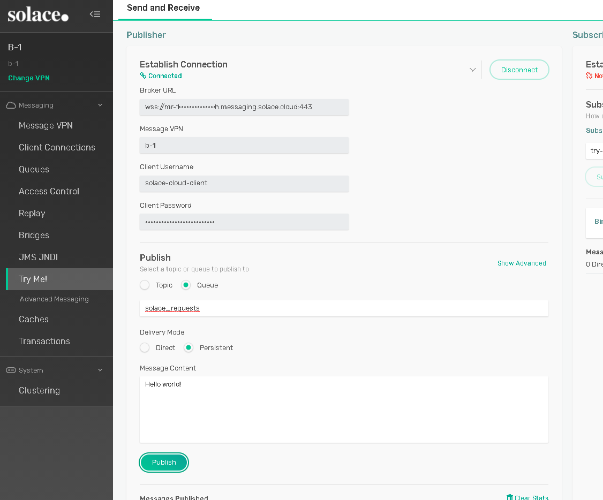

This document shows you how to integrate the Solace Java Message Service (JMS) with IBM WebSphere Liberty Application Server v20 or later for production and consumption of JMS messages. We'll outline best practices to allow efficient use of both the application server and Solace JMS.
The target audience is developers using the WebSphere Liberty application server who have general knowledge of both it and JMS. This document focuses on the steps required to integrate the two, and provides instructions on configuring and deploying the Solace JCA 1.5 resource adapter. For detailed information on either Solace JMS or WebSphere Liberty, refer to the documents referenced below.
This document is divided into the following sections:
- Integrating with WebSphere Application Server
- Performance Considerations
- Working with Solace High Availability
- Debugging Tips
- Advanced Topics including:
- Using SSL Communication
- Working with Transactions
- Working with Solace Disaster Recovery
Related Documentation
This tutorial requires access to Solace PubSub+ event broker and requires that you know several connectivity properties about your event broker. Specifically you need to know the following:
Resource | Value | Description |
Host | String | This is the address clients use when connecting to the event broker to send and receive messages. (Format: |
Message VPN | String | The event broker Message VPN that this client should connect to. |
Client Username | String | The client username. (See Notes below) |
Client Password | String | The client password. (See Notes below) |
There are several ways you can get access to Solace messaging and find these required properties.
Option 1: Use Solace Cloud
- Follow these instructions to quickly spin up a cloud-based Solace messaging service for your applications.
- The messaging connectivity information is found in the service details in the connectivity tab (shown below). You will need:
- Host:Port (use the JMS URI)
- Message VPN
- Client Username
- Client Password

Option 2: Start a Solace PubSub+ Software Event Broker
- Follow these instructions to start the software event broker in leading Clouds, Container Platforms or Hypervisors. The tutorials outline where to download and how to install the Solace software event broker.
- The messaging connectivity information are the following:
- Host: <public_ip> (IP address assigned to the software event broker in tutorial instructions)
- Message VPN: default
- Client Username: sampleUser (can be any value)
- Client Password: samplePassword (can be any value)
Option 3: Get access to a Solace PubSub+ appliance
- Contact your Solace PubSub+ appliance administrators and obtain the following:
- A Solace Message-VPN where you can produce and consume direct and persistent messages
- The host name or IP address of the appliance hosting your Message-VPN
- A username and password to access the appliance
Solace provides a JCA compliant resource adapter for integrating Java enterprise applications with the Solace PubSub+ event broker. There are several options for deploying a Resource Adapter for use by Java enterprise applications including embedded and stand-alone deployment. Solace provides a Resource Adapter Archive (RAR) file for stand-alone deployment.
In order to illustrate the WebSphere Liberty application server integration, the following sections will highlight the required Liberty configuration changes, and provide sample code for sending and receiving messages using Enterprise Java Beans.
This EJB sample consists of two enterprise beans, a Message Driven Bean and a Session Bean. The MDB is configured to receive a message on a requests Queue. When the MDB receives a message it then calls a method of the Session Bean to send a reply message to a replies Queue. The EJB sample requires configuration of various J2C entities in WebSphere to support usage of the Solace JCA compliant resource adapter.
The following steps are required to accomplish the above goals of sending and receiving messages using the Solace PubSub+ event broker.
Description of Resources Required
The Solace JCA 1.5 resource adapter is provided as a standalone RAR file and is versioned together with a specific release of the Solace JMS API. The JMS API libraries are bundled inside a single resource adapter RAR file for deployment to the WebSphere application server.
- Resource: Solace JCA 1.5 resource adapter stand-alone RAR file (sol-jms-ra-%version%.rar)
- Download Options:
- Solace Downloads - Under Open APIs and protocols, JMS API
- From
products.solace.comif you have an enterprise account
Solace Resource Naming Convention
To illustrate this integration example, all named resources created on the Solace PubSub+ event broker will have the following prefixes:
Resource | Prefix |
Non-JNDI resource | solace_%RESOURCE_NAME% |
JNDI names | JNDI/Sol/%RESOURCE_NAME% |
Solace Resources
The following Solace PubSub+ event broker resources are required for the integration sample in this document.
Resource | Value | Description |
Solace Event Broker Host | Refer to section Get Solace Messaging for values | |
Message VPN | ||
Client Username | ||
Client Password | ||
Solace Queue | solace_requests | Solace destination for messages consumed by JEE enterprise application. This is the name of physical queue configured on the broker. |
Solace Queue | solace_replies | Solace destination for messages produced by JEE enterprise application. This is the name of physical queue configured on the broker. |
JNDI Connection Factory | JNDI/Sol/CF | The JNDI Connection factory for controlling Solace JMS connection properties |
JNDI Connection Factory | JNDI/Sol/CF | The JNDI Connection factory for controlling Solace JMS connection properties |
JNDI Queue Name | JNDI/Sol/Q/requests | The JNDI name of the queue used in the samples, maps to `solace_requests`. |
JNDI Queue Name | JNDI/Sol/Q/replies | The JNDI name of the queue used in the samples, maps to `solace_replies`. |
WebSphere Liberty Resource Naming Convention
To illustrate this integration example, all named resources created in Liberty will have the following prefixes:
Resource | Prefix |
Non-JNDI resource | j2c_%RESOURCE_NAME% |
JNDI names | JNDI/J2C/%RESOURCE_NAME% |
WebSphere Liberty Resources
The following Liberty resources are required for the integration example in this document.
Resource | id | JNDI Value | Description | |
Resource Adapter | N/A | N/A | The Solace JMS Resource Adapter packaged as a Standalone RAR package (Implements a JCA compliant Resource Adapter) | |
J2C activation specification | JNDI/J2C/AS | A J2C entity used to initialize a Message Driven Bean and to bind it to a Solace JMS destination using the Solace implementation of javax.jms.MessageListener (For Inbound messaging) | ||
J2C connection factory | j2c_cf | JNDI/J2C/CF | A J2C entity used to access a Solace javax.jms.ConnectionFactory (For Outbound messaging) | |
J2C administered object | j2c_reply_queue | JNDI/J2C/Q/replies | A J2C entity used to perform a JNDI lookup of a javax.jms.Queue on the event broker (For Outbound messaging) | |
Solace JMS provider Configuration
The following entities on the Solace PubSub+ event broker need to be configured at a minimum to enable JMS to send and receive messages within the WebSphere Liberty application server.
- A Message VPN, or virtual event broker, to scope the integration on the event broker
- Client connectivity configurations like usernames and profiles
- Guaranteed messaging endpoints for receiving and sending messages.
- Appropriate JNDI mappings enabling JMS clients to connect to the event broker configuration.
{% include_relative assets/solaceConfig.md %}
{% include_relative assets/solaceVpn.md content="solace_VPN" %}
Configuring Client Usernames & Profiles
This section outlines how to update the default client-profile and how to create a client username for connecting to the event broker For the client-profile, it is important to enable guaranteed messaging for JMS messaging and transacted sessions for the XA-transactions capable Solace JCA Resource Adapter. The chosen client username of "solace_user" will be required by Liberty when connecting to the event broker
(config)# client-profile default message-vpn solace_VPN
(config-client-profile)# message-spool allow-guaranteed-message-receive
(config-client-profile)# message-spool allow-guaranteed-message-send
(config-client-profile)# message-spool allow-guaranteed-endpoint-create
(config-client-profile)# message-spool allow-transacted-sessions
(config-client-profile)# exi
(config)#
(config)# create client-username solace_user message-vpn solace_VPN
(config-client-username)# acl-profile default
(config-client-username)# client-profile default
(config-client-username)# no shutdown
(config-client-username)# exit
(config)#
Setting up Guaranteed Messaging Endpoints
This integration guide shows receiving messages and sending reply messages within the WebSphere Application Server using two separate JMS Queues. For illustration purposes, these queues are chosen to be exclusive queues with a message spool quota of 2GB matching quota associated with the message VPN. This shall be adjusted to your requirements. The queue names chosen are "solace_requests" and "solace_replies".
(config)# message-spool message-vpn solace_VPN
(config-message-spool)# create queue solace_requests
(config-message-spool-queue)# access-type exclusive
(config-message-spool-queue)# max-spool-usage 2000
(config-message-spool-queue)# permission all delete
(config-message-spool-queue)# no shutdown
(config-message-spool-queue)# exit
(config-message-spool)# create queue solace_replies
(config-message-spool-queue)# access-type exclusive
(config-message-spool-queue)# max-spool-usage 2000
(config-message-spool-queue)# permission all delete
(config-message-spool-queue)# no shutdown
(config-message-spool-queue)# exit
(config-message-spool)# exit
(config)#
Setting up Solace JNDI References
To enable the JMS clients to connect and look up the queue destination required by WebSphere Application Server, there are three JNDI objects required on the event broker:
- A connection factory: JNDI/Sol/CF
- Note: Ensure
direct-transportis disabled for JMS persistent messaging.
- Note: Ensure
- A queue destination: JNDI/Sol/Q/requests
- A queue destination: JNDI/Sol/Q/replies
They are configured as follows:
Note: this will configure a connection factory without XA support as the default for the XA property is False. See section Enabling XA Support for JMS Connection Factories for XA configuration.
(config)# jndi message-vpn solace_VPN
(config-jndi)# create connection-factory JNDI/Sol/CF
(config-jndi-connection-factory)# property-list messaging-properties
(config-jndi-connection-factory-pl)# property default-delivery-mode persistent
(config-jndi-connection-factory-pl)# exit
(config-jndi-connection-factory)# property-list transport-properties
(config-jndi-connection-factory-pl)# property direct-transport false
(config-jndi-connection-factory-pl)# property "reconnect-retry-wait" "3000"
(config-jndi-connection-factory-pl)# property "reconnect-retries" "20"
(config-jndi-connection-factory-pl)# property "connect-retries-per-host" "5"
(config-jndi-connection-factory-pl)# property "connect-retries" "1"
(config-jndi-connection-factory-pl)# exit
(config-jndi-connection-factory)# exit
(config-jndi)#
(config-jndi)# create queue JNDI/Sol/Q/requests
(config-jndi-queue)# property physical-name solace_requests
(config-jndi-queue)# exit
(config-jndi)#
(config-jndi)# create queue JNDI/Sol/Q/replies
(config-jndi-queue)# property physical-name solace_replies
(config-jndi-queue)# exit
(config-jndi)#
(config-jndi)# no shutdown
(config-jndi)# exit
(config)#
Solace provides a JCA compliant Resource Adapter that can be deployed to the WebSphere application server allowing Enterprise Java Beans to connect to Solace through a standard JCA interface. This integration guide outlines the steps to deploy the resource adapter which is provided by Solace as a packaged stand-alone RAR file. This is the recommended way of integrating Solace with WebSphere as it provides support for XA transactions.
Here are some of the important directories for this guide, relative to the standard installation root directory (wls):
bin # server admin scripts
usr/servers/defaultServer # using the default server name here
usr/servers/defaultServer/apps # location to deploy enterprise apps
usr/servers/defaultServer/logs # location of server logs
usr/shared/resources/solace # location to deploy the Solace JMS Resource Adapter
WebSphere Liberty is configured using the server.xml configuration file, located at usr/servers/defaultServer.
An example server.xml used in this guide is available from the GitHub repo.
Adding feature manager features
Feature manager features are specified in the server.xml.
Full JavaEE support is required:
<!-- Enable features -->
<featureManager>
<feature>javaee-8.0</feature>
</featureManager>
This will enable dependent features that don't need to be specified additionally, includinglocalConnector-1.0, mdb-3.2, ejb-3.2, ejbHome-3.2, jca-1.7 and jms-2.0. Note: jms-2.0 includes support for JMS 1.1.
Adding the Solace Resource Adapter as a Resource and Configuring the Resource Adapter properties
This will make the Solace Resource Adapter available as a resource to all enterprise applications (Refer to the above section [Description of Resources Required] how to obtain the Solace JCA 1.5 Resource Adapter RAR file).
In the server.xml file, configure the stand-alone resource adapter by supplying an ID and specifying where the resource adapter RAR file is located. This guide recommends usr/shared/resources/solace as the location.
Connecting to the event broker through the Solace JMS Resource Adapter requires configuration of additional resources in WebSphere. Two key pieces of information are required including connectivity information to the event broker and client authentication data.
In between the tags, specify the connection URL, username, password and Message VPN required to connect to the event broker.
<resourceAdapter autoStart="true" id="solace" location="${shared.resource.dir}/solace/sol-jms-ra-%version%.rar">
<properties.solace ConnectionURL="%tcp://IP:Port%" MessageVPN="%solace_VPN%" Password="%solace_password%" UserName="%solace_user%"/>
</resourceAdapter>
Note: Replace all values above, including the % symbols by your actual configuration values.
The above information is specified across one or more J2C entities depending on your application"s JMS message flow (Inbound, Outbound, or both). Configuration of a J2C connection factory and J2C administered objects is required for outbound message flow, while configuration of a J2C activation specification is required for inbound message flow.
Extended Properties
Extended Properties are custom properties of the Solace Resource Adapter
The Resource Adapter may include several custom properties for advanced control of the connection to the Solace event broker. Setting these properties at the Resource Adapter level makes the information available to all child J2C entities like J2C connection factory, J2C activation specification and J2C administered objects. The properties can also be overridden at the J2C entity level allowing connectivity to multiple event brokers.
Extended Properties are specified as a Semicolon-separated list. Example:
<resourceAdapter autoStart="true" id="solace" location="${shared.resource.dir}/solace/sol-jms-ra-%version%.rar">
<properties.solace ConnectionURL="%tcp://IP:Port%" MessageVPN="%solace_VPN%" Password="%solace_password%" UserName="%solace_user%" ExtendedProps="%Property1%=%Value1%;%Property2%=%Value2%"/>
</resourceAdapter>
Note: Replace all values above, including the % symbols by your actual configuration values.
Supported Extended Properties include:
- Solace_JMS_Authentication_Scheme
- Solace_JMS_CompressionLevel
- Solace_JMS_JNDI_ConnectRetries
- Solace_JMS_JNDI_ConnectRetriesPerHost
- Solace_JMS_JNDI_ConnectTimeout
- Solace_JMS_JNDI_ReadTimeout
- Solace_JMS_JNDI_ReconnectRetries
- Solace_JMS_JNDI_ReconnectRetryWait
- Solace_JMS_SSL_ValidateCertificateDate
- Solace_JMS_SSL_ValidateCertificate
- Solace_JMS_SSL_CipherSuites
- Solace_JMS_SSL_KeyStore
- Solace_JMS_SSL_KeyStoreFormat
- Solace_JMS_SSL_KeyStorePassword
- Solace_JMS_SSL_PrivateKeyAlias
- Solace_JMS_SSL_PrivateKeyPassword
- Solace_JMS_SSL_ExcludedProtocols
- Solace_JMS_SSL_TrustStore
- Solace_JMS_SSL_TrustStoreFormat
- Solace_JMS_SSL_TrustStorePassword
- Solace_JMS_SSL_TrustedCommonNameList
- java.naming.factory.initial
For example: ‘solace_JMS_CompressionLevel=9'
Configuring Activation Specifications for Inbound Messaging
To receive messages from the Solace JMS provider, the client is bound to a J2C Activation Specification which specifies the JMS destination from which to consume messages as well as the authentication details used to connect to the event broker.
- In the
server.xmlfile, add a new activation specification. Use the ID value JNDI/J2C/AS for this example. Important: it must match with theactivation-spec-binding-nameinibm-ejb-jar-bnd.xml- see section Sample Application Code. - Provide the the J2C activation specification custom properties
<jmsActivationSpec id="JNDI/J2C/AS">
<properties.solace connectionFactoryJndiName="JNDI/Sol/CF" destination="JNDI/Sol/Q/requests" destinationType="javax.jms.Queue"/>
</jmsActivationSpec>
The following table summarizes the values used for the J2C activation specification custom properties.
Name | Value | Description |
connectionFactoryJndiName | JNDI/Sol/CF | The JNDI name of the JMS connection factory as configured on the event broker, for inbound connections. |
destination | JNDI/Sol/Q/requests | The JNDI name of the JMS destination as configured on the event broker. |
destinationType | javax.jms.Queue | The JMS class name for the desired destination type. |
Configuring Connection Factories for Outbound Messaging
A client must use a J2C Connection Factory to create a JMS connection to the Solace PubSub+ event broker. A JMS connection establishes a data channel between the event broker and the JMS application. The Connection Factory provides a number of configuration parameters to customize the connection between the JMS client and the event broker.
- Create a JMS Connection with an ID of "j2c_cf" in the
server.xmlfile. Specify the JNDI name that will be used to lookup this J2C Connection Factory. Use the value JNDI/J2C/CF for this example. Important: it must match with thefing-nameconfigured for the ConnectionFactory resource of the session bean inibm-ejb-jar-bnd.xml- see section Sample Application Code. - Add a custom property called
ConnectionFactoryJNDINameand specify the name of the Connection Factory that was configured on the Solace event broker when setting up Solace JNDI References.
<jmsConnectionFactory id="j2c_cf" jndiName="JNDI/J2C/CF">
<properties.solace ConnectionFactoryJndiName="JNDI/Sol/CF2"/>
</jmsConnectionFactory>
The following table summarizes the values used for the J2C connection factory custom properties.
Name | Value | Description |
ConnectionFactoryJndiName | JNDI/Sol/CF | The JNDI name of the JMS connection factory as configured on the event broker, for outbound connections. |
Note: the same JNDI/Sol/CF configured on the Solace broker is used here for both incoming and outgoing connections. It is possible to specify two different connection factories, one for inbound and another one for outbound.
Configuring Connection Pooling for a connection factory
Connection Pooling allows the configuration of the amount of concurrent connections that are run between the WebSphere server and the event broker. Those connections are shared between the requests coming from the applications, therefore the resources can be used more efficiently (limited number of connections) and optimized for performance (pre-initialized connections).
The amounts to be set vary, depending on the demand of the WebSphere application(s). Capacity planning and load testing should identify the appropriate values. E.g. if only every 3rd request is using messaging, the pool size can be reduced approximately by that factor from the maximum amount of concurrent requests.
Configuration example:
<jmsConnectionFactory id="j2c_cf" jndiName="JNDI/J2C/CF" connectionManagerRef="cm1">
<properties.solace ConnectionFactoryJndiName="JNDI/Sol/CF2"/>
</jmsConnectionFactory>
<connectionManager id="cm1" maxPoolSize="10" minPoolSize="2" />
Values are:
maxPoolSize | Maximum number of connection created for this pool |
minPoolSize | Minimum number of connections maintained in the pool |
Note: Liberty uses default values for any connection management settings that are not defined on the connectionManager element. If a connection manager is not defined for a connection factory, the server uses the default values for all the settings.
Configuring Administered Objects for Outbound Messaging
A J2C Administered Object is required for a client to send outbound messages to a JMS destination. It is either a JMS Queue (jmsQueue) or a JMS Topic (jmsTopic).
- Create a JMS Queue with an ID of "j2c_reply_queue". This will be the queue that the session bean will publish reply messages to. Specify the J2C JNDI name, use a value of JNDI/J2S/Q/replies for this example. Important: it must match with the
binding-nameof the Queue resource configured for the session bean inibm-ejb-jar-bnd.xml- see section Sample Application Code. - Add a custom property called
ConnectionFactoryJNDINameand specify the name of the Connection Factory that was configured on the Solace event broker when setting up Solace JNDI References.
<jmsQueue id="j2c_reply_queue" jndiName="JNDI/J2C/Q/replies">
<properties.solace Destination="JNDI/Sol/Q/replies"/>
</jmsQueue>
The following table summarizes the values used for the custom properties:
Name | Value | Description |
Destination | JNDI/Sol/Q/replies | The JNDI name of the JMS destination as configured on the event broker. |
Redeploy the resource adapter with the new settings
Restart WebSphere Liberty for these changes to take effect.
Source code for an Enterprise Java Beans (EJB) application for WebSphere Liberty, implementing waiting for receiving and then sending a message, has been provided in the GitHub repo of this guide.
There are three variants:
- EJBSample-WAS/ejbModule - used in this basic application sample.
- EJBSample-WAS-XA-BMT/ejbModule - used in the Working with XA Transactions sample.
- EJBSample-WAS-XA-CMT/ejbModule - used in the Working with XA Transactions sample.
The structure of all variants is the same:
- Java source files under
ejbModule/com/solace/sample/- ConsumerMDB.java - implements a message-driven EJB bean, triggered on receiving a message from the Solace event broker
- ProducerSB.java - implements
sendMessage()in a session EJB bean, used to send a message to the Solace event broker - Producer.java - "Producer"'s remote EJB interface to call
sendMessage() - ProducerLocal.java - "Producer"'s local EJB interface to call
sendMessage()
- EJB XML descriptors under
ejbModule/META-INF/- ejb-jar.xml - deployment descriptor providing required EJB configuration information
- ibm-ejb-jar-bnd.xml - descriptor providing WebSphere application binding information
Receiving messages from Solace – Sample Code
The sample code below shows the implementation of a message-driven bean ("ConsumerMDB") which listens for JMS messages to arrive on the configured Solace connection factory and destination (JNDI/Sol/CF and JNDI/Sol/Q/requests respectively - as configured in the J2C activation specification). Upon receiving a message, the MDB calls the method sendMessage() of the "ProducerSB" session bean which in turn sends a reply message to a "reply" Queue destination.
@TransactionAttribute(value = TransactionAttributeType.NOT_SUPPORTED)
@MessageDriven
public class ConsumerMDB implements MessageListener {
@EJB(beanName = "ProducerSB", beanInterface = Producer.class)
Producer sb;
public ConsumerMDB() {
}
public void onMessage(Message message) {
String msg = message.toString();
System.out.println(Thread.currentThread().getName() + " - ConsumerMDB: received message: " + msg);
try {
// Send reply message
sb.sendMessage();
} catch (JMSException e) {
throw new EJBException("Error while sending reply message", e);
}
}
}
The full source code for this example is available in the following source:
Sending Messages to Solace – Sample code
The sample code below shows the implementation of a session bean ("ProducerSB") that implements a method sendMessage() which sends a JMS message to the Queue destination configured above. The sendMessage() method is called by the "ConsumerMDB" bean outlined in the previous section.
This example uses Java resource injection for the resources "myCF" and "myReplyQueue" which are mapped to their respective J2C entities using an application binding file (see example application bindings file following the code example below).
@Stateless(name = "ProducerSB")
@TransactionAttribute(value = TransactionAttributeType.NOT_SUPPORTED)
public class ProducerSB implements Producer, ProducerLocal {
@Resource(name = "myCF")
ConnectionFactory myCF;
@Resource(name = "myReplyQueue")
Queue myReplyQueue;
public ProducerSB() {
}
@Override
public void sendMessage() throws JMSException {
System.out.println("Sending reply message");
Connection conn = null;
Session session = null;
MessageProducer prod = null;
try {
conn = myCF.createConnection();
session = conn.createSession(false, Session.AUTO_ACKNOWLEDGE);
prod = session.createProducer(myReplyQueue);
ObjectMessage msg = session.createObjectMessage();
msg.setObject("Hello world!");
prod.send(msg, DeliveryMode.PERSISTENT, 0, 0);
} finally {
if (prod != null)
prod.close();
if (session != null)
session.close();
if (conn != null)
conn.close();
}
}
}
The code sample illustrated in this guide uses the following EJB application bindings file:
<!-- ProducerSB (Session Bean) resources binding -->
<session name="ProducerSB">
<resource-ref name="myCF" binding-name="JNDI/J2C/CF" />
<resource-ref name="myReplyQueue" binding-name="JNDI/J2C/Q/replies" />
</session>
<!-- ConsumerMDB (Message Driven Bean) activation specification binding -->
<message-driven name="ConsumerMDB">
<jca-adapter activation-spec-binding-name="JNDI/J2C/AS" />
</message-driven>
The full source code for this example is available in the following sources:
Building the samples
Instructions are provided for "Eclipse IDE for Java EE Developers". Adjust the steps accordingly if your environment differs.
Follow these steps to create and build your project:
- Clone this project from GitHub
git clone https://github.com/SolaceLabs/solace-integration-guides.git
cd solace-integration-guides/src/websphere-liberty/EJBSample-WAS/ejbModule/
- Create a new "EJB project" in Eclipse. Optionally check the "Add your project to an EAR" to create an Enterprise Archive instead of an EJB JAR.
- Replace the new project
ejbModuledirectory contents (created empty) with the contents of theejbModuledirectory of this repo, then refresh your project in the IDE. - If getting a build error it may be required to add a JEE API 5 or later jar library to the project build path. This can be your application server's JEE library or download and include a general one, such as from org.apache.openejb » javaee-api.
- Export your project to an EJB JAR file or alternatively, if you have a related EAR project created then export from there to an EAR file.
You have now built the sample application as a deployable JAR or EAR archive. Take note of the file and directory location.
Deploying the sample application
Steps to deploy the sample application:
- Specify an ejbApplication in the
server.xml, replaceLibertyTest.jarby your application archive's name: Important: theclassloadermust be specified and refer to the ID of the resource adapter. Otherwise outgoing messaging will throw an exception not being able to loadSolJNDIInitialContextFactory.
<ejbApplication id="LibertyTest" location="LibertyTest.jar" name="LibertyTest">
<classloader classProviderRef="solace"/>
</ejbApplication>
- Copy your application archive to the
usr/servers/defaultServer/appsdirectory.
You have now deployed the sample application and it is ready to receive messages from the solace_requests queue on the event broker.
Testing the sample application
The easiest option to send a test message is to use the Try-Me! integrated publisher of the PubSub+ Broker Manager. Ensure to provide the correct broker "Web Messaging" connection details and after successful connection, publish to the Queue solace_requests.

Once a message has been sent to the solace_requests queue it will be delivered to the enterprise application, which will consume it from there and send a new message to the solace_replies queue.
You can check the messages in the solace_replies queue using the using Solace PubSub+ Manager, Solace's browser-based administration console.
You can also check how the message has been processed in WebSphere Liberty logs as described in section "Debugging Tips for Solace JMS API Integration".
The Solace JMS Resource Adapter relies on the WebSphere Liberty application server for managing the pool of JMS connections. Tuning performance for outbound messaging can in part be accomplished by balancing the maximum number of pooled connections available against the number of peak concurrent outbound messaging clients.
For inbound messaging there are different levers that can be tuned for maximum performance in a given environment. The "batchSize" custom property of the Solace J2C activation specification defines the maximum number of messages retrieved at a time from a JMS destination for delivery to a server session. The server session then routes those messages to respective Message Driven Beans. In addition, the "maxPoolSize" custom property of the Solace J2C AS defines the maximum number of pooled JMS sessions that can be allocated to MDB threads. Therefore to fine tune performance for inbound messaging, the "batchSize" and "maxPoolSize" must be balanced to the rate of incoming messages.
Another consideration is the overhead of performing JNDI lookups to the event broker. Liberty implements JNDI caching by default. Resources referenced by a Message Driven Bean through resource injection will trigger an initial JNDI lookup and subsequently use the cached information whenever the MDB instance is reused from the MDB pool. Similarly, Session beans that perform JNDI lookups through a JNDI Context will have that information cached in association with that context. Whenever the Session bean instance is reused from the Session bean pool, any lookups using the same JNDI Context will utilize the JNDI cached information.
Note: in order to use the JNDI caching mechanisms within Liberty you must use JMS through a JCA resource adapter and reference JMS end points in your code through JEE resource injection. Please refer to WAS-REF for details on modifying the default behavior of JNDI caching.
In general, refer to WAS-REF for details on tuning Liberty for messaging performance:
- WebSphere Application Server > Tuning performance > Messaging resources > Tuning messaging
The Solace Messaging API for JMS section "Establishing Connection and Creating Sessions" provides details on how to enable the Solace JMS connection to automatically reconnect to the standby event broker in the case of a HA failover of a event broker. By default Solace JMS connections will reconnect to the standby event broker in the case of an HA failover.
In general the Solace documentation contains the following note regarding reconnection:
Note: When using HA redundant event brokers, a fail-over from one event broker to its mate will typically occur in less than 30 seconds, however, applications should attempt to reconnect for at least five minutes.
In "Setting up Solace JNDI References", the Solace CLI commands correctly configured the required JNDI properties to reasonable values. These commands are repeated here for completeness.
(config)# jndi message-vpn solace_VPN
(config-jndi)# create connection-factory JNDI/Sol/CF
(config-jndi-connection-factory)# property-list transport-properties
(config-jndi-connection-factory-pl)# property "reconnect-retry-wait" "3000"
(config-jndi-connection-factory-pl)# property "reconnect-retries" "20"
(config-jndi-connection-factory-pl)# property "connect-retries-per-host" "5"
(config-jndi-connection-factory-pl)# property "connect-retries" "1"
(config-jndi-connection-factory-pl)# exit
(config-jndi-connection-factory)# exit
(config-jndi)# exit
(config)#
In addition to configuring the above properties for connection factories, care should be taken to configure connection properties for performing JNDI lookups to the event broker. These settings can be configured in Liberty globally by setting them at the Solace Resource Adapter level or within individual J2C entities.
To configure JNDI connection properties for JNDI lookups, set the corresponding Solace JMS property values (as a semicolon-separated list of name=value pairs) through the ‘ExtendedProps' custom property of the Solace Resource Adapter or J2C connection factories.
- Solace_JMS_JNDI_ConnectRetries = 1
- Solace_JMS_JNDI_ConnectRetriesPerHost = 5
- Solace_JMS_JNDI_ConnectTimeout = 30000 (milliseconds)
- Solace_JMS_JNDI_ReadTimeout = 10000 (milliseconds)
- Solace_JMS_JNDI_ReconnectRetries = 20
- Solace_JMS_JNDI_ReconnectRetryWait 3000 (milliseconds)
The key component for debugging integration issues with the Solace JMS API is to enable API logging. Enabling API logging from Liberty is described below.
How to enable Solace JMS API logging
You can enable different logging levels for the Solace Resource Adapter and Solace JMS API by a logging element to the server.xml configuration file as follows:
<logging traceSpecification="*=info:com.solacesystems=all" consoleLogLevel="INFO" jsonAccessLogFields="logFormat"/>
Valid logging levels are off, fatal, severe, warning, audit, info, config, detail, fine, finer, finest, all.
Authentication
The integration example illustrated in this guide uses the authentication information specified in the custom properties of the Solace Resource Adapter. These authentication properties are used whenever Application Managed authentication is specified for a JCA resource. No matter the authentication mode (Application-Managed or Container-Managed) specified for a resource, the Solace ‘MessageVPN' information for a connection is always retrieved from the Solace Resource Adapter configured properties, or the configured properties of the respective J2C resource.
WebSphere Liberty supports configuration of Container-Managed authentication for J2C resources. The administrator of an EJB application can configure event broker sign-on credentials using a J2C authentication alias that is assigned to either a J2C activation specification or J2C connection factory. Solace JCA resource adapter supports authentication using the ‘DefaultPrincipalMapping' mapping configuration alias. Refer to WAS-REF for more details on configuring J2C authentication data aliases.
The event broker supports a variety of client authentications schemes as described in the Solace documentation Client Authentication and Authorization. The Solace JCA resource adapter supports a subset of these schemes including Basic authentication and ‘SSL Client Certificate' authentication. The default authentication scheme used by the Solace JMS Resource Adapter is AUTHENTICATION_SCHEME_BASIC.
The value of the Solace Resource Adapter custom property ‘extendedProps' is used to specify an alternate authentication scheme such as ‘AUTHENTICATION_SCHEME_CLIENT_CERTIFICATE'. The value of the custom property ‘extendedProps' consists of a semicolon-separated list of Solace JMS property / value pairs (SOLACE_PROPERTY=value). You can specify the required properties for an alternate authentication scheme using this technique. Refer to the Solace JMS API Online Reference Documentation for further details on the required JMS properties for configuring SSL client certificate authentication.
Although the authentication scheme AUTHENTICATION_SCHEME_BASIC is the default scheme, that scheme could also have been specified using the extendedProps custom property of the resource adapter.
- ExtendedProps - solace_JMS_Authentication_Scheme=AUTHENTICATION_SCHEME_BASIC
Using SSL Communication
This section outlines how to update the event broker and WebSphere Liberty configuration to switch the client connection to using secure connections with the event broker. For purposes of illustration, this section uses a server certificate on the event broker and basic client authentication. It's possible to configure Solace JMS to use client certificates instead of basic authentication. This is done using configuration steps that are very similar to those outlined in this document. The Solace Documentation and Solace Messaging API for JMS outline the extra configuration items required to switch from basic authentication to client certificates.
To change WebSphere Liberty from using a plain text connection to a secure connection, the event broker configuration must first be updated, and the Solace JMS configuration within Liberty must be updated as outlined in the next sections.
Configuring the event broker
To enable secure connections to the event broker, the following configuration must be updated on the event broker.
- Server Certificate
- TLS/SSL Service Listen Port
- Enable TLS/SSL over SMF in the Message VPN
The following subsections outline how to configure these items.
Configure the Server Certificate
Before starting, here is some background information on the server certificate required by the event broker. This is from the Solace documentation:
To enable TLS/SSL-encryption, you must set the TLS/SSL server certificate file that the Solace PubSub+ event broker is to use. This server certificate is presented to clients during TLS/SSL handshakes. The server certificate must be an x509v3 certificate and include a private key. The server certificate and key use an RSA algorithm for private key generation, encryption and decryption, and they both must be encoded with a Privacy Enhanced Mail (PEM) format.
To configure the server certificate, first copy the server certificate to the event broker. For the purposes of this example, assume the server certificate file is named "mycert.pem".
# copy sftp://[<username>@]<ip-addr>/<remote-pathname>/mycert.pem /certs
<username>@<ip-addr>'s password:
#
Then set the server certificate for the event broker.
(config)# ssl server-certificate mycert.pem
(config)#
##### Configure TLS/SSL Service Listen Port
By default, the event broker accepts secure messaging client connections on port 55443. If this port is acceptable then no further configuration is required and this section can be skipped. If a non-default port is desired, then follow the steps below. Note this configuration change will disrupt service to all clients of the event broker, and should therefore be performed during a maintenance window when client disconnection is acceptable. This example assumes that the new port should be 55403.
(config)# service smf
(config-service-smf)# shutdown
All SMF and WEB clients will be disconnected.
Do you want to continue (y/n)? y
(config-service-smf)# listen-port 55403 ssl
(config-service-smf)# no shutdown
(config-service-smf)# exit
(config)#
##### Enable TLS/SSL within the Message VPN
By default, within Solace Message VPNs both plain-text and SSL services are enabled. If the Message VPN defaults remain unchanged, then this section can be skipped. However, if within the current application VPN, this service has been disabled, then for secure communication to succeed it should be enabled. The steps below show how to enable SSL within the SMF service to allow secure client connections from the Liberty server.
(config)# message-vpn solace_VPN
(config-msg-vpn)# service smf
(config-msg-vpn-service-smf)# ssl
(config-msg-vpn-service-ssl)# no shutdown
(config-msg-vpn-service-ssl)# exit
(config-msg-vpn-service-smf)# exit
(config-msg-vpn-service)# exit
(config-msg-vpn)# exit
(config)#
#### Configuring the WebSphere Liberty Application Server
Secure connections to the Solace JMS provider require configuring SSL parameters on one or more J2C entities. While using the Solace Resource Adapter, these two parameters include changes to the Solace J2C custom properties ‘ConnectionURL' and ‘ExtendedProps'. Note that the property values for ‘ConnectionURL' and ‘ExtendedProps' are inherited by J2C connection factory and J2C administered objects from their parent Resource Adapter. Thus, unless you are connecting to multiple event brokers, a best practice is to configure values for ‘ConnectionURL' and ‘ExtendedProps' in the Solace Resource Adapter, otherwise the SSL related changes should be duplicated across custom properties for all of the J2C entities you want to secure.
The required SSL parameters include modifications to the URL scheme of ‘ConnectionURL' (from tcp to tcps), and setting additional SSL attributes through the custom property ‘ExtendedProps'. The following sections describe the required changes in more detail.
Updating the JMS provider URL (ConnectionURL)
In order to signal to the Solace JMS API that the connection should be a secure connection, the protocol must be updated in the URI scheme. The Solace JMS API has a URI format as follows:
<URI Scheme>://[username]:[password]@<IP address>[:port]
Recall from the previous section, originally, the "ConnectionURL" was as follows:
tcp://___IP:PORT___
This specified a URI scheme of "tcp" which is the plaint-text method of communicating with the event broker. This should be updated to "tcps" to switch to secure communication giving you the following configuration:
tcps://___IP:PORT___
##### Specifying other SSL Related Configuration
The Solace JMS API must be able to validate the server certificate of the event broker in order to establish a secure connection. To do this, the following trust store parameters need to be provided.
Note: this is not required if the standard JVM trust store already includes the Certificate Authority used to sign the server certificate.
First the Solace JMS API must be given a location of a trust store file so that it can verify the credentials of the event broker server certificate during connection establishment. This parameter takes a URL or Path to the trust store file.
Specifying a value for the parameter ‘solace_JMS_SSL_TrustStore' is accomplished by modifying the Solace J2C custom property ‘ExtendedProps'. The value for the property is comprised of a semicolon-separated list of Solace JMS parameters.
Solace_JMS_SSL_TrustStore=___Path_or_URL___
A trust store password may also be specified. This password allows the Solace JMS API to validate the integrity of the contents of the trust store. This is done through the Solace JMS parameter ‘solace_JMS_SSL_TrustStorePassword'.
Solace_JMS_SSL_TrustStorePassword=___Password___
There are multiple formats for the trust store file. By default Solace JMS assumes a format of Java Key Store (JKS). So if the trust store file follows the JKS format then this parameter may be omitted. Solace JMS supports two formats for the trust store: "jks" for Java Key Store or "pkcs12". Setting the trust store format is done through the parameter ‘solace_JMS_SSL_TrustStoreFormat':
Solace_JMS_SSL_TrustStoreFormat=jks
In a similar fashion, the authentication scheme used to connect to Solace may be specified using the parameter ‘solace_JMS_Authentication_Scheme':
- AUTHENTICATION_SCHEME_BASIC
- AUTHENTICATION_SCHEME_CLIENT_CERTIFICATE
The integration examples in this guide use basic authentication (the default authentication scheme):
Solace_JMS_Authentication_Scheme=AUTHENTICATION_SCHEME_BASIC
These configurations can be added as Extended Properties to the resource adapter or the connection factory definitions.
Working with Transactions
This section demonstrates how to configure the Solace event broker to support the transaction processing capabilities of the Solace JCA Resource Adapter. In addition, code examples are provided showing JMS message consumption and production over both types of Enterprise Java Bean transactions: Container-Managed-Transactions (CMT) and Bean-Managed-Transaction (BMT) configuration.
Both BMT and CMT transactions are mapped to Solace JCA Resource Adapter XA Transactions.
Note: BMT is using one-phase-commit and for CMT it is up to the container to use one-phase or two-phase-commit.
In addition to the standard XA Recovery functionality provided through the Solace JCA Resource Adapter, the Solace event broker provides XA transaction administration facilities in the event that customers must perform manual failure recovery. For full details refer to the Solace documentation on administering and configuring XA Transaction on the Solace event broker.
Enabling XA Support for JMS Connection Factories
For both CMT or BMT transactions, XA transaction support must be enabled for the specific JMS connection factories: the customer needs to configure XA support property for the respective JNDI connection factory on the Solace event broker using the Solace PubSub+ Manager admin console or the CLI as follows:
(config)# jndi message-vpn solace_VPN
(config-jndi)# connection-factory JNDI/Sol/CF
(config-jndi-connection-factory)# property-list messaging-properties
(config-jndi-connection-factory-pl)# property xa true
(config-jndi-connection-factory-pl)# exit
(config-jndi-connection-factory)# exit
(config-jndi)#
Note: enabling XA support on the broker does not necessarily mean 2-phase commit. This simply means using transaction support implementation over the proprietary Solace SMF protocol, making use of a lightweight transaction manager implemented in the Solace event broker.
Transactions – Sample Code
The following examples demonstrate how to receive and send messages using EJB transactions. Examples are given for both BMT and CMT in GitHub:
For building and deployment instructions refer to the Sample Application Code section.
Receiving messages from Solace over XA transaction – CMT Sample Code
The following code is similar to the basic "ConsumerMDB" example, but specifies Container-Managed XA Transaction support for inbound messages - see in the @TransactionManagement annotation. In this example, the Message-Driven-Bean (MDB) - ‘XAConsumerMDB' is configured such that the EJB container will provision and start an XA transaction prior to calling the onMessage() method and finalize or rollback the transaction when onMessage() exits (Rollback typically occurs when an unchecked exception is caught by the Container).
@TransactionManagement(value = TransactionManagementType.CONTAINER)
@MessageDriven
public class XAConsumerMDB implements MessageListener {
@EJB(beanName = "XAProducerSB", beanInterface = Producer.class)
Producer sb;
public XAConsumerMDB() {
}
@TransactionAttribute(value = TransactionAttributeType.REQUIRED)
public void onMessage(Message message) {
String msg = message.toString();
System.out.println(Thread.currentThread().getName() + " - ConsumerMDB: received message: " + msg);
try {
// Send reply message
sb.sendMessage();
} catch (JMSException e) {
throw new EJBException("Error while sending reply message", e);
}
}
}
The full source code for this example is available here:
Note that it is important to limit the maximum number of XAConsumerMDB in the pool to ensure that the maximum per client concurrent transaction session count on the event broker is not exceeded. The maximum concurrent transacted sessioncount can be configured on the client-profile on the event broker
Sending Messages to Solace over XA Transaction – CMT Sample Code
The following code is similar to the "ProducerSB" EJB example from above, but configures Container-Managed XA Transaction support for outbound messaging. In this example, the Session Bean ‘XAProducerSB' method ‘sendMessage()' requires that the caller have an existing XA Transaction context. In this example, the ‘sendMessage()' method is called from the MDB - ‘XAConsumerMDB' in the above example where the EJB container has created an XA Transaction context for the inbound message. When the method sendMessage() completes the EJB container will either finalize the XA transaction or perform a rollback operation.
@Stateless(name = "XAProducerSB")
@TransactionManagement(value=TransactionManagementType.CONTAINER)
public class XAProducerSB implements Producer, ProducerLocal {
@Resource(name = "myCF")
ConnectionFactory myCF;
@Resource(name = "myReplyQueue")
Queue myReplyQueue;
public XAProducerSB() {
}
@TransactionAttribute(value = TransactionAttributeType.REQUIRED)
@Override
public void sendMessage() throws JMSException {
:
:
}
The full source code for this example is available here:
Sending Messages to Solace over XA Transaction – BMT Sample Code
EJB code can use the UserTransaction interface (Bean-Managed) to provision and control the lifecycle of an XA transaction. The EJB container won't provision XA transactions when the EJB class's ‘TransactionManagement' type is designated as ‘BEAN' managed. In the following example, the session Bean ‘XAProducerBMTSB' starts a new XA Transaction and performs an explicit ‘commit()' operation after successfully sending the message. If a runtime error is detected, then an explicit ‘rollback()' operation is executed. If the rollback operation fails, then the EJB code throws an EJBException() to allow the EJB container to handle the error.
@Stateless(name = "XAProducerBMTSB")
@TransactionManagement(value=TransactionManagementType.BEAN)
public class XAProducerBMTSB implements Producer, ProducerLocal {
@Resource(name = "myCF")
ConnectionFactory myCF;
@Resource(name = "myReplyQueue")
Queue myReplyQueue;
@Resource
SessionContext sessionContext;
public XAProducerBMTSB() {
}
@Override
public void sendMessage() throws JMSException {
:
:
UserTransaction ux = sessionContext.getUserTransaction();
try {
ux.begin();
conn = myCF.createConnection();
session = conn.createSession(true, Session.AUTO_ACKNOWLEDGE);
prod = session.createProducer(myReplyQueue);
ObjectMessage msg = session.createObjectMessage();
msg.setObject("Hello world!");
prod.send(msg, DeliveryMode.PERSISTENT, 0, 0);
ux.commit();
} catch (Exception e) {
e.printStackTrace();
try {
ux.rollback();
} catch (Exception ex) {
throw new EJBException(
"rollback failed: " + ex.getMessage(), ex);
}
}
:
:
}
}
The full source code for this example is available here:
Enabling Local Transaction Support for EJBs
You can override the use of XA Transactions (the default transactional mode of the Solace JCA Resource Adapter) and force the use of Local Transactions for specific EJBs. Note: configuring Local Transactions for an EJB instructs the Transaction Manager in WebSphere to request the use of a Local Transaction from the Solace JCA Resource Adapter; hence, the use of Local Transaction support provided by the event broker.
The example EJB deployment descriptor file (ibm-ejb-jar-ext.xml) that configures the Session Bean "ProducerSB" to use Local Transactions instead of XA Transactions. Refer to WAS-REF for further details on WebSphere specific EJB deployment descriptor files.
<ejb-jar-ext xmlns="http://websphere.ibm.com/xml/ns/javaee"
xmlns:xsi="http://www.w3.org/2001/XMLSchema-instance"
xsi:schemaLocation="http://websphere.ibm.com/xml/ns/javaee
http://websphere.ibm.com/xml/ns/javaee/ibm-ejb-jar-ext_1_0.xsd"
version="1.0">
<session name="ProducerSB">
<local-transaction boundary="BEAN_METHOD"
resolver="CONTAINER_AT_BOUNDARY"/>
</session>
</ejb-jar-ext>
Working with Solace Disaster Recovery
This section describes configuration required to have WebSphere Liberty successfully connect to a backup data center using Solace's Data Center Replication feature.
Configuring a Host List within WebSphere Liberty
As described in Solace Feature Guide client configuration, the host list provides the address of the backup data center. This is configured within WebSphere Liberty through the ConnectionURL custom property value (of a respective J2C entity) as follows:
tcp://__IP_active_site:PORT__,tcp://__IP_standby_site:PORT__
The active site and standby site addresses are provided as a comma-separated list of Connection URIs. When connecting, the Solace JMS connection will first try the active site, and if it's unable to successfully connect to the active site, it will try the standby site. This is discussed in much more detail in the referenced Solace documentation
Configuring reasonable JMS Reconnection Properties within Solace JNDI
In order to enable applications to successfully reconnect to the standby site in the event of a data center failure, it is required that the Solace JMS connection be configured to attempt connection reconnection for a sufficiently long time to enable the manual switch-over to occur. The length of time is application specific depending on individual disaster recovery procedures, and can range from minutes to hours depending on the application. In general it's best to tune the reconnection by changing the "reconnect retries" parameter within the Solace JNDI to a value large enough to cover the maximum time to detect and execute a disaster recovery switch over. If this time is unknown, it's also possible to use a value of "-1" to force the Solace JMS API to reconnect indefinitely.
The reconnect retries is tuned for the respective JNDI connection factory on the event broker using the Solace PubSub+ Manager admin console or the CLI as follows:
(config)# jndi message-vpn solace_VPN
(config-jndi)# connection-factory JNDI/Sol/CF
(config-jndi-connection-factory)# property-list transport-properties
(config-jndi-connection-factory-pl)# property "reconnect-retries" "-1"
(config-jndi-connection-factory-pl)# exit
(config-jndi-connection-factory)# exit
(config-jndi)# exit
(config)#
Configuring Message Driven Bean Reactivation in the Event of Activation Failures
If a message driven bean is de-activated during a replication failover, the bean may be successfully re-activated to the replication site if the reconnection properties of the bean"s Activation Specification are properly configured. The default reconnection properties of the J2C activation specification are configured to not re-activate the bean upon de-activation.
To enable WebSphere Liberty to attempt to re-activate the de-activated MDB, configure the reconnection custom properties of the J2C activation specification:
Custom Property | Default Value | Description |
reconnectAttempts | 0 | The number of times to attempt to re-activate an MDB after the MDB has failed to activate. |
reconnectInterval | 10 | The time interval in seconds to wait between attempts to re-activate the MDB. |
##### Receiving Messages in a Message Driven Bean
There is no special processing required during a disaster recovery switch-over specifically for applications receiving messages. After successfully reconnecting to the standby site, it's possible that the application will receive some duplicate messages. The application should apply normal duplicate detection handling for these messages.
Sending Messages from a Session Bean
For WebSphere Liberty applications that are sending messages, there is nothing specifically required to reconnect the Solace JMS connection. However, any messages that were in the process of being sent will receive an error from the Solace Resource Adapter. These messages must be retransmitted as possibly duplicated. The application should catch and handle any of the following exceptions:
- javax.resource.spi.SecurityException
- javax.resource.ResourceException or one of its subclasses
- javax.jms.JMSException